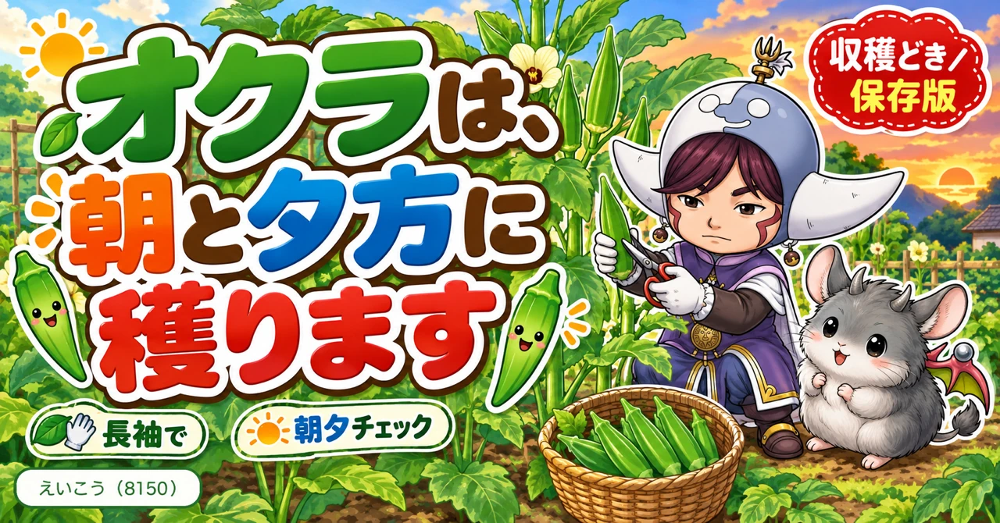
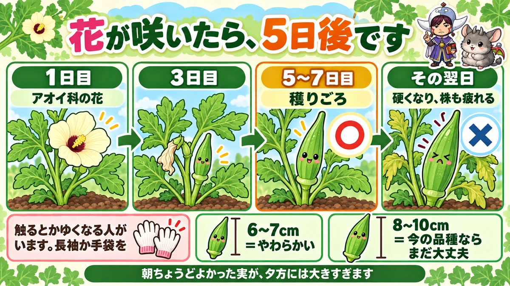
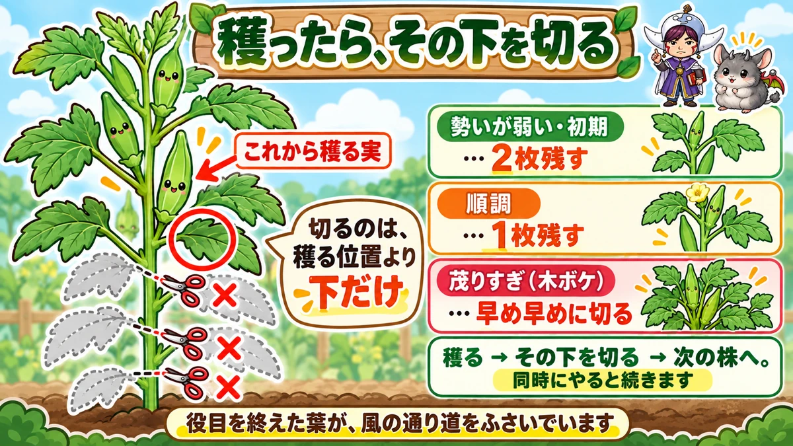
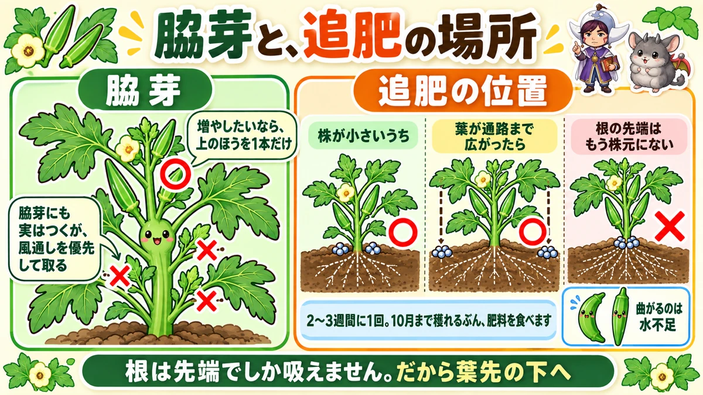

オクラは朝と夕方、2回穫ります🌿 1日で硬くなるからです

🌿「気づいたら、かたくて食べられなかった」
🌿「葉ばかり茂って、実が少ない」
🌿「収穫すると手がかゆくなる」
どうも、8150（えいこう）です🌱 家庭菜園歴8年、理科の教員免許を持っていて、有機・無農薬で野菜を育てています。
前回はかぼちゃでした。今日はオクラです。
先に、この記事でいちばん言いたいことを言っておきますね。
★オクラは、1日で硬くなります。
だからピーク時は★朝と夕方の2回、穫ってください。「昨日はまだ小さかったのに」の正体が、これです🌿
まず、オクラの基本データ
3つだけ押さえてください
- 科：アオイ科（ハイビスカスやふようの仲間。連作にはわりと強いです）
- タネまき：4月中旬〜5月（直まきなら5月に入ってから。1か所3粒）
- 植え付け：5月（本葉2〜3枚のころ）
※時期は中間地（関東〜関西の平野部）が目安。寒い地域は少し遅らせ、暖かい地域は早めに。
📖 この記事の目次
株間30〜40cm、1か所2本
オクラは1か所に2本立てておくのがおすすめです。
★2本にすると、育ちがゆるやかになります。1本だと勢いがつきすぎて、実が硬くなりやすいんですよね。
長袖と手袋を用意してください
これは先に言っておきます。
★オクラの葉や実には細かい毛があって、触るとかゆくなる方がいます。
私も半袖で収穫した日に、腕が真っ赤になりました😅 ★長袖か手袋、どちらかは用意しておいてください。
★花が咲いたら、5日後には穫りごろ

オクラの花は、大きくてきれいです
オクラの花を見たことがない方は、ぜひ見てください。★クリーム色の、ハイビスカスによく似た大きな花です。
アオイ科なので当然といえば当然なのですが、初めて見ると「これがオクラ？」と驚きます。
5〜7日で、実になります
その花が咲いてから★5日から7日で、実が穫りごろの大きさになります。
つまり★花を見つけたら、5日後にカレンダーの印をつけておけばいい。これがいちばん確実な目安です。
サイズは8〜10cmで十分
昔の本には「6〜7cmで穫る」と書いてあります。
★今の品種は、8〜10cmでもそこまで硬くなりません。品種改良が進んでいるからです。
ただし★やわらかいものが好きな方は、6〜7cmで穫ってください。実際、小さいほうが確実においしいです。
★1日2回、穫ってください
1回では、間に合いません
ここが今日の本題です。
収穫が始まったばかりのころは、1日1回で足ります。★でもピークに入ると、1日1回では追いつきません。
朝ちょうどよかった実が、★夕方には大きくなりすぎている。本当にそのくらい伸びます。
大きくしすぎる損は、2つ
「大きいほうがたくさん食べられるのでは」と思いますよね。★損が2つあります。
- ★硬くて、筋っぽくなる
- ★株に負担がかかって、次の実の勢いが落ちる
2つ目が地味に効きます。★大きな実を1つ残すと、その先の収穫が減るんですよね。ここはピーマンやかぼちゃと同じ話です。
ハサミで切ってください
もう1つ。★収穫は必ずハサミを使ってください。
手でもぎ取ると、茎の皮ごと剥けることがあります。★そこから傷んで、株が弱ります。
★収穫と同時に、下の葉を切ります

オクラは下から上へ実る
オクラは、★下から順に上へ実をつけていきます。
だから下のほうの葉は、実がもう終わった場所についています。★役目を終えた葉です。
そのまま残しておくと、葉が茂って風が通らなくなります。
ルールは1つだけ
やり方は、覚えることが1つしかありません。
★今から収穫する実の、下の葉を1枚残して、あとは切る。
これだけです。上のほうの葉は残します。切るのは、収穫する位置より下だけ。
勢いで、残す枚数を変える
少しだけ調整があります。
- ★株がまだ小さい・勢いが弱い … 2枚残す
- ★順調に穫れている … 1枚残す
- ★茂りすぎている … 早め早めに切る
葉ばかり茂って実がつかない状態を「木ボケ」といいます。★そうなったら、迷わず切ってください。
★同時にやると、早い
私が続けられている理由がこれです。
★穫る → その下の葉を切る → 次の株へ。この繰り返しにすると、別作業になりません。
ハサミを持ったまま、ついでに切るだけ。★「あとでやろう」だと、たいていやらないんですよね😅
脇芽と、追肥と、曲がり果

脇芽は、取ります
主軸の葉の付け根から、脇芽が出てきます。
★オクラは脇芽にも実がつきます。だから「伸ばせば倍穫れるのでは」と思いますよね。
でも★私は取ることをおすすめします。理由は風通しです。オクラは葉が大きいので、脇芽まで伸ばすとすぐ密集します。
★どうしても増やしたい方は、下のほうではなく上のほうの脇芽を1本だけ伸ばしてください。
★追肥は、葉先の真下へ
オクラは10月まで穫れる長距離ランナーです。★そのぶん肥料を食べます。
★2〜3週間に1回、追肥してください。
そして位置が大事です。
- ★株がまだ小さいうち … 株元のまわり
- ★葉が通路まで広がったら … 葉先の真下の延長上
理由は根の先端がそこまで伸びているからです。★根は先端でしか吸えません。追肥の回で書いたとおりですね。
曲がるのは、水不足です
梅雨が明けたころ、実が曲がることがあります。
★あれはたいてい水不足です。
朝か夕方の涼しい時間に、しっかり水をやってください。★まっすぐな実が増えます。
倒伏は、あまり心配しなくていい
オクラは茎がとても太いので、★普段は倒れません。
私は支柱も紐も使っていません。★大型の台風が来るときだけ、まわりを紐で囲っておけば十分です。
学ぶ：1日で硬くなるのは、種を守るためです🔬
オクラは「実」ではなく「さや」
まず前提から。食べているオクラは、★果実というより「さや」です。
中に小さな種がびっしり並んでいますよね。★あれが本体です。
種が育つと、外側を硬くする
植物にとって、実は★種を守る入れ物です。
種が育ってくると、入れ物も丈夫にしなければなりません。★そこで、細胞のまわりに繊維をどんどん足していきます。
この繊維が★筋の正体です。かんでも切れない、あの筋ですね。
だから「1日」で変わる
オクラは成長が速い野菜です。★暑い時期は1日で数cm伸びます。
伸びるということは、★その分だけ繊維も足されるということ。だから「昨日はやわらかかったのに」が起きます。
★種が完成する前の、まだやわらかい入れ物を食べているわけですね。
実物で確かめられます
これは家で比べられます。
★穫りごろの実と、1日置いてしまった実を、包丁で輪切りにしてみてください。
断面の白い筋の量が、はっきり違います。★理屈より、この1回のほうが記憶に残ります☺️
まとめ
ここまで読んでくださって、ありがとうございます！
- ★オクラはアオイ科。株間30〜40cm、1か所2本立て
- ★葉と実でかゆくなる人がいる。長袖か手袋を
- ★花が咲いて5〜7日で穫りごろ
- ★サイズは8〜10cm。やわらかいのが好きなら6〜7cm
- ★ピーク時は朝夕の2回穫る
- ★大きくしすぎると硬くなり、株も疲れる
- ★収穫は必ずハサミで
- ★今から穫る実の下の葉を1枚残して、あとは切る
- ★勢いが弱いときは2枚、茂りすぎなら早めに切る
- ★収穫と下葉切りは同時にやると続く
- ★脇芽は取る。増やしたいなら上のほうを1本だけ
- ★追肥は2〜3週間に1回、葉先の真下へ
- ★曲がるのは水不足。朝夕に水やり
- ★倒伏は台風のときだけ気にすればいい
- ★硬くなるのは、種を守る繊維が増えるから
全部やろうとしなくて大丈夫です。まずは★明日の夕方、もう一度畑に行ってみてください。朝に見送った実が、どれだけ大きくなっているかが分かります🌿
次回は、ズッキーニの話です。★きゅうりに似ているのに、まったく違う育て方をする野菜のお話をします🥒
収穫バサミ
オクラは1日で硬くなります。毎朝ハサミを持って畑に出るくらいでちょうどいいです。
![[商品価格に関しましては、リンクが作成された時点と現時点で情報が変更されている場合がございます。]](https://hbb.afl.rakuten.co.jp/hgb/56d22030.def85fa7.56d22031.b89fde86/?me_id=1250472&item_id=10022339&pc=https%3A%2F%2Fthumbnail.image.rakuten.co.jp%2F%400_mall%2Fplantz%2Fcabinet%2F01%2Ft-13.jpg%3F_ex%3D240x240&s=240x240&t=picttext "[商品価格に関しましては、リンクが作成された時点と現時点で情報が変更されている場合がございます。]")

手袋
オクラの葉と実には細かい毛があって、素手だとかゆくなります。長袖と手袋が正解です。

炭化鶏ふん
次々と実をつける野菜なので、追肥を切らさないことが収穫量に直結します。
![[商品価格に関しましては、リンクが作成された時点と現時点で情報が変更されている場合がございます。]](https://hbb.afl.rakuten.co.jp/hgb/55e7612a.7de1526b.55e7612b.01a50904/?me_id=1214866&item_id=10002182&pc=https%3A%2F%2Fthumbnail.image.rakuten.co.jp%2F%400_mall%2Fkaju%2Fcabinet%2F00714580%2F03462454%2F07486601%2Fimgrc0071643813.jpg%3F_ex%3D240x240&s=240x240&t=picttext "[商品価格に関しましては、リンクが作成された時点と現時点で情報が変更されている場合がございます。]")
あわせて読みたい